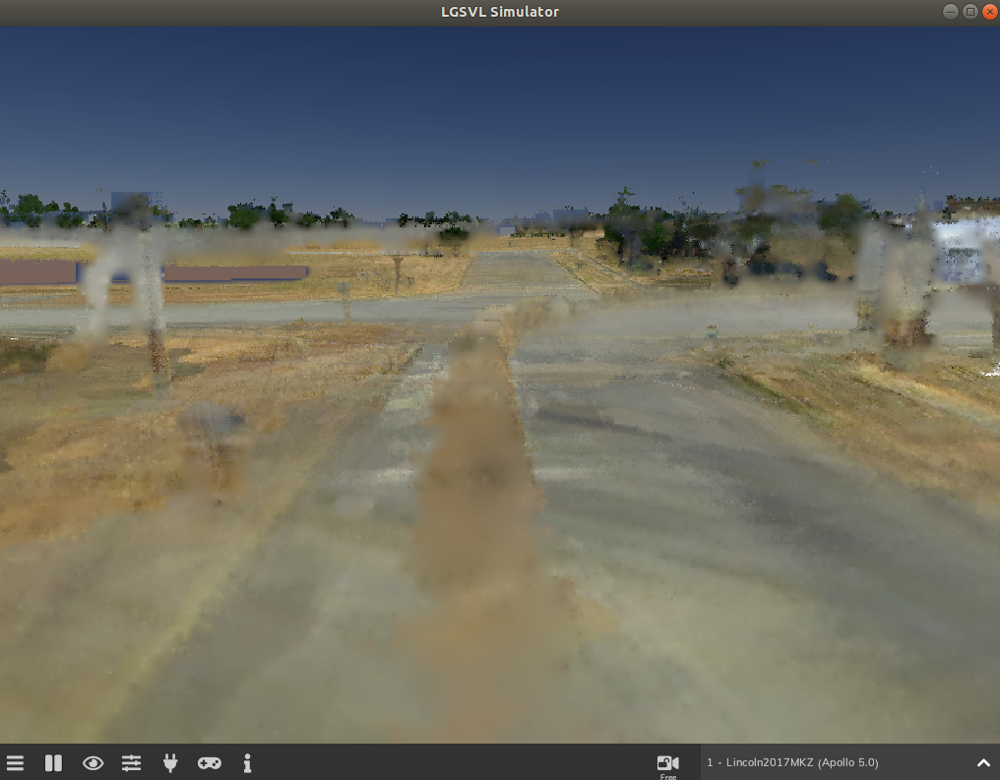

Example map: GoMentum Station Digital Twin Lite
We are providing the GoMentum Station Digital Twin Lite (GoMentum DTL) map as an example of a point cloud based environment. The GoMentum Station area is a testing ground dedicated for autonomous vehicles located in Concord, California. We drove our data collection car and collected sensor data in this area for generating the GoMentum DTL map. Using the point cloud importer and point cloud renderer, the Simulator can dynamically load and unload the point clouds based on the location of the ego vehicles. Thus, there is no limitation on the size of the map with improved performance of simulations.

Figure: Preview of GoMentum Station Digital Twin Lite map
Prerequisites top#
-
SVL Simulator
-
GoMentum DTL (Digital Twin Lite) map assetbundle
-
Apollo 5.0
Instructions for how to run with Apollo 5.0 top#
Follow these steps to run Apollo on GoMentum DTL:
-
Launch SVL Simulator
-
Click on the Open Browser button to launch the simulator Web UI in a web browser

-
In the Simulations section, locate Local-Random: GoMentum DTL (Apollo) simulation under the Available from Others tab and add it by clicking the Add button

-
Select your cluster from the cluster dropdown menu in the General tab

-
Select the Apollo 5.0 as your sensor configuration for the Lincoln2017MKZ vehicle in the Test case tab

-
Select the Apollo 5.0 as your autopilot and enter your bridge IP address and port number in the Autopilot tab

-
Click the Publish button to finish the simulation setup in the Publish tab

-
-
(Optional) GoMentum DTL map and Lincoln2017MKZ vehicle should be automatically added to the Library. If not, please follow the instructions for Adding a map and Adding a vehicle to add them manually.
-
In the Vehicles section under the Library, locate Lincoln2017MKZ vehicle and click it to go into a sensor configuration page

-
Select the Apollo 5.0 sensor configuration

-
If you see a notification for any missing plugins, click the Add to Library button and make sure that you have all the sensor plugins listed in the configuration added to the Plugins section under the Library

-
Locate Local-Random: GoMentum DTL (Apollo) simulation in the Simulations tab and click the Run Simulation button at the bottom to start simulation

-
Local-Random: GoMentum DTL (Apollo) simulation should now be up and running in the main window of the simulator

-
Finally, launch Apollo 5.0 alongside SVL Simulator


Figure: Apollo dreamview and SVL Simulator detecting NPCs on the road with sensor visualizations enabled

Figure: Apollo dreamview and SVL Simulator detecting an NPC in an intersection from top-down view

Figure: Rviz showing point clouds published to ROS from SVL Simulator
Known issues top#
Overall, Apollo will be able to drive around most areas of GoMentum DTL with no issues, but there are some known issues in GoMentum DTL as this is an early access version. Here is a list of known issues for the current release that will be fixed soon in future releases.
Dynamic objects top#
Some other cars were captured while collecting sensor data from the field and remain as dummy noises on some roads. Later, we will have a Dynamic object removal feature in the Digital Twin Lite pipeline which removes dynamic objects such as cars or pedestrians from point clouds during the data processing.

Figure: Streaks of blur on the road due to a moving car captured in ROSBAG
Baked-in shadows top#
Colorized point clouds have shadows baked in already (e.g., under trees) because shadows were captured in camera images during a data collection phase. In the future release, we’ll remove the baked-in shadows from images and use simulated shadows instead based on the sun position in the simulator.

Figure: Baked-in shadows from trees and buildings on the road